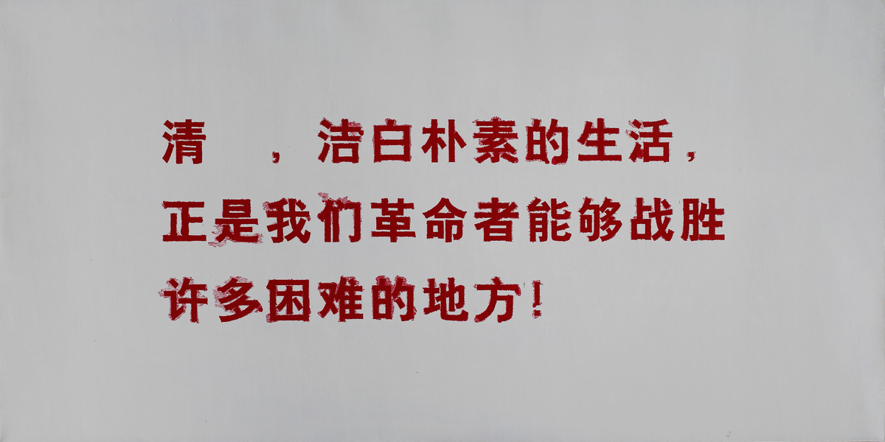
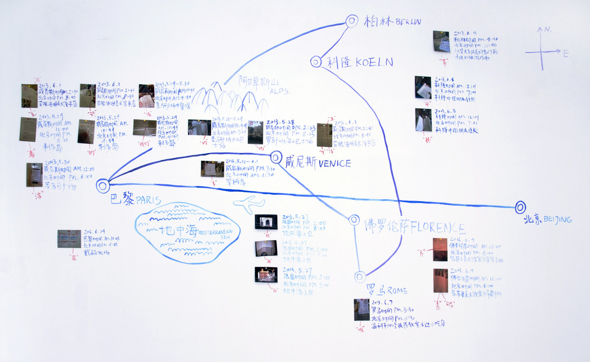
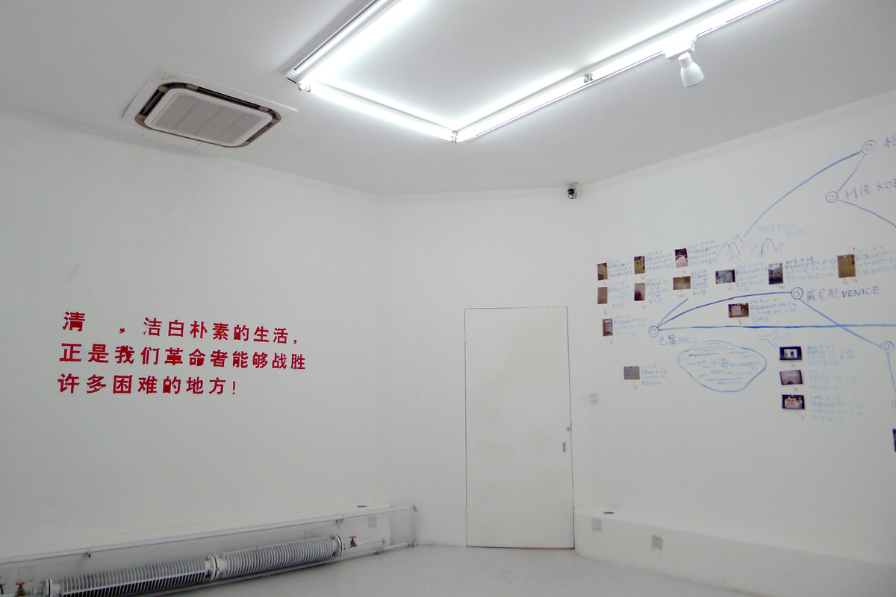
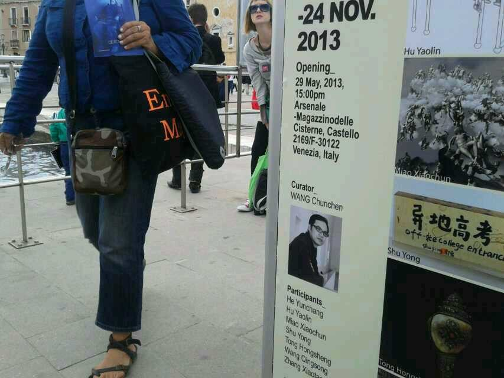

清贫 | POVERTY

行为，综合媒介，可变尺寸，2013
Action, Mixed media art, Variable, 2013
在展览期间，请在欧洲旅行的朋友帮我找到“清贫，洁白朴素的生活，正是我们革命者能够战胜许多困难的地方！”这27个字。每找到一个字，就将其写在展厅里，直至展览结束。最终找到了26个。
这句话取自同名文章《清贫》，是革命家方志敏在监狱里所写，文章认为他们这些革命家不同于腐败的国民党政府的地方在于清廉和朴素。
During the exhibition, I asked my friends who were travelling in Europe to find all 27 Chinese characters of “清贫，洁白朴素的生活，正是我们革命者能够战胜许多困难的地方！”(To remain honest though poor, and to live a clean and simple life – that is what we revolutionaries count on to overcome innumerable difficulties!) Any character that was found was written in the exhibition hall. At the end of the exhibition, 26 characters were found, except "贫".
The sentence was extracted from the article Poverty written by revolutionary Fang Zhimin in a prison. The article argued that what distinguished revolutionaries from the corrupt KMT government was honesty and simplicity.

地一现场，仁艺术中心，北京
LOOK ART SPACE, Beijing

地一现场，仁艺术中心，北京
LOOK ART SPACE, Beijing

在威尼斯找到的中国字，威尼斯
Chinese characters found in Venice